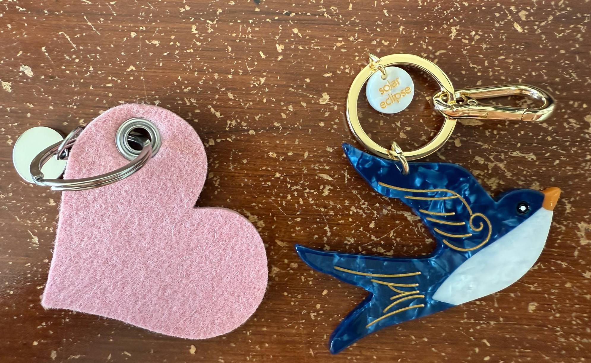

looked it up and it is a bit related
looked it up and it is a bit related :33
Goopnight!!!! üëç. Without so many doubts!
https://www.google.com/search?q=what+to+eat+on+first+date&rlz=1C5GCCM_en&oq=what+to+eat+on+first+date&gs_lcrp=EgZjaHJvbWUyCQgAEEUYORiABDIHCAEQABiABDIICAIQABgWGB4yCAgDEAAYFhgeMggIBBAAGBYYHjIICAUQABgWGB4yCAgGEAAYFhgeMggIBxAAGBYYHjIICAgQABgWGB4yCAgJEAAYFhge0gEINjM2NmowajSoAgCwAgE&sourceid=chrome&ie=UTF-8
going to try wake up early!
1800$ for 1 ticket ü•≤ https://www.thedatascienceconference.com/agenda?fbclid=IwY2xjawJo5YRleHRuA2FlbQIxMAABHuw7nqylGq6j40ulFyiMAQdC8hlV0JJ2JL7arhY1aTzQR3JgVGtwEb8YkgCL_aem_phy7IgYQUS6jcK4Hy9Youg
Open do compare! :33 I don't think the Peo-ple like me...But they like u much!! :P Hehe bebe
:3 Hi Gabriel :3
Sstressed!
:333
:3 honestly, I am kind of stressed. I Have not found an internship for this summer. Still looking for intern volunteer work now ü•≤
Then How Are We Suppose to Meatttttt. I mean meet.
You still have to work Easter break yep?!
.Ok let me try be only mYselF.
Heyooo, so uhm, can weeee start with something comfortable for the both of us? Hi, Mickey? ;__; PSes (more to comeeee): I only practiced driving, don't have a license yet. Amongst many other Prublems/Challenges. Let's gooooooo
Despite all the deadlines, I stilll want to go on a shopping spreeeee =((
young me when look at others: erarrgfffffff haiz OK cede etc. Ya, so do you watch nba or just football?
:3333
Omazing debt relief program...hello Monday why so many...üëç also, Mac/Mike/Mrrr I MIGHT have some good news! :3
Piu piu :3
Pink looks good on you. But soooo, there are stages right...And how to blend in the 'crowd'? Or disregard the crowd...?
#dontmakemefeellamecommunicatinglikethis.Iknowimlamee. (I got work for now until almost the end of June! So still need to find work but at least!!!)
:3
#teamlazyhwduetodaybutdontwanttodohandsonexercise
;_; I waunt...
https://www.youtube.com/shorts/RPgilvwFM44 the first comment =)))
goodmorning!!
OkE, it seems/FEELS like up to this point, we have a principle of contradiction :p
Heyo, cutest!!!!
üëç
https://www.youtube.com/watch?v=CP6LQjJo7eY
omg no more confusing please. Procedings stuffs may be taken with a grain of salt. But you are also right wing right? And sorry if I was confusing. It hurt being fooled (kind of) before. Took years to heal (mostly heal from my own delusion but). It, They really took hold of my well being. Anyways, I feel like real encounters are really difficult cause we as different sex have nothing to talk about but just work (and plans for the future :)). But if any chance of a cool/chill first encounter or texting YOU want is fine. I am trying to make something that will click(superficially) between us for others/the whole world to agree with but nowhere yet. Also, the age gap is annoying (cause you are still young and I am growing old) and I think people gonna talk. I don't have much of a sense of humor so I borrow it from friends. My personal obsession is clothing, which I think you have no interest in. I think we can bond over complaints of the world reallly. I hope this doesn't bother you, my dear.
=.=
Uhm, I feel like I'm oVeR sharing here but. U share. Ahn is actually the letters in the Hangul? alphabet system of Korean language. When I make the gmail, ngminhanh is taken so i use ahn instead...
I will be like very busy this week! Will you be in DC this summer or anywhere?
so u r saying goodbye??? ;_; 9
Y u keep demanding the truth from me... üëç
https://graflantz.com/products/key-fob-heart-felt?variant=32849007542381&sscid=41k9_vv5xe&utm_source=ShareASale&utm_medium=Affiliate&utm_campaign=3153110&utm_term=2499189 pink or redd?
:3
hello! email thing is still confusing!!!, car is also still confusing!
digital creator etc...
do you know how to make a website to be searchable/show up when search on google?
I am doing final projects for Deep Learning and Quantum Computing! #ambitiousbutstilllazy
S4 ?
:3 :p
Hello, I plan to have today morning doing nothing. R u free too?
so many tings to say but yet have the opportunities.
(Were you ever in luv?)
so will tis be online for a while? *scratching my head
So, are u gonna be a detective, lawyer or boss of the bodyguards kind of or SPROSTSSST?... #TopSecretClearance?
kisses :3
Uhm, can we meet somewhere with pre-notice...? Pwease?
Goopnight ASKS! R u interested in explosives, i wonder where its energy comes from
üëâüëà My fam's here on diplomat visa. They will leave by the beginning of 2026 (I will too after them 3 months if I can't find a job *knock on wood). It's sad cause we just get comfortable being here! ;__;
üòí Hit Confirm! I went to a data science book review today. It was like a bit random. But informative... Met some people from a company called exelon. *side eyes But like when Networking, have intrusive thoughts
goopnight! have to finish this quantum paper then to full time deeep learnin.
:3333
gonna have dinner with friend at Garvey todey.
*pout
goopmorning!
done with the quantum paper, the messiest thing ever get done. I could have make the language more clear but still don't understand the system as a whole so lazy don't want to spend more time on it...
:3

:3
https://www.youtube.com/watch?v=LjaA8C_Y36g
hellu!! I overslept today... Did able to get up at 9:30 10 days before, which is better! I probably will just gonna spend weekend doing nothing agein, trying to find random treasures. What is your weekend like? :p *stressed but is watchin netflix Bleh
so to confirm are we after love along side with/above other things?
can i also assume we have time? *crossing my fingers.
üëçüëç findin how radio waves get transformed into sound waves and how to make different channels
:3 :3
Argh so many. U so strict!
Noooo. https://www.propublica.org/article/trump-halted-agent-orange-cleanup-dioxin-vietnam-poison-risk?utm_source=threads&utm_medium=social&utm_campaign=propublica-threads&utm_content=agent-orange-threadi&fbclid=IwY2xjawKQXOZleHRuA2FlbQIxMQBicmlkETFrMXkzNnRGcjhxM3B2M2tzAR7n5hQo6g-wkL0iTE0iZMnUew21J-SOpOoatZ9hufvhW7J-iWLXtldVKmKrlg_aem_lGKM-LNwA_yO7SpHibKdSg
Spent 5 days at home not getting out. today went for a 20 minute walk struggling...
Good evenning!! Yay, FrEe QuOtes!!! Just watching the Goonies right now and some MIT maker portfolio on Youtube.
OK!
:3
plese tell me what you like. I want to try.
üëç
I am still over(ly)-simulated. Let merh calm down.
https://www.instagram.com/minhanhng123/
IiIii waunt a date!
I had kind of a busy day today, running errands? Good Night :33
Hello hello , am trying to get in the grrind, which is always very messy and confusing but WatTeVErz. Do u want a trip to Vietnam? I remember you are Irish, Dutch but then can't remember the other 2. Is it Italian and Portuguese? But I've been thinking, are u sure you kind of work for Homeland Security and for American government and people. Is there a place for us? Also, I really really want to stay here but that's depen-dent on whether I can find job or not. However, a strategy I use back home is "nói trước bước không qua", so one can't say to success it before you made it there.
lookin(g) for a bracelet to wear always
:3
*nod* is guilty of buying too many things
https://www.youtube.com/watch?v=0OXaanDHENI
what did you do today?!
aneeways if u want to hear me rant on a normal day sunday evening
I went out today to get some frilly socks because I need a purpose to put in some steps. I plan to go there H&M by metro then walk home. I got there and the place wasn't open so I have to walk to the other H&M which is at Georgetown. I got there and the socks materials was terrible and the frills don't look good. But cause I already walk there, I look for some summer clothes. I got an on sale Athleta shirt, whose materials very light and airy but is polyester and a Alo Yoga shorts, which was not on sale. The short is ...a bit really short but I think it is a nice short for summer cause it looks fancy in my opinion. But I hope I can wear it often, if not, may return it cause too short making people cat-calling for that... I wore a sleeve-less lemon print with white bows in the back (just received from Hanoi) and these black people is overly chatty with me, calling me 'sweethearts', looking at me. Very uncomfortable... But I still want to keep the shorts!!!
andddd, cause you're kind of here. Which is better: I got the 68$ shorts but now i look online, there is this 78$ version. The 68 perks is have longer inseam and zipped pocket but the 78$ have layers so look more techno. But i think the 78 would look better on someone who have actual athletic thighs, legs. Not sure but 68 might be better cause less detail.
good next week!
but :B
ü§™
Polish? /p>
:33
watching a thriller movie on netflix, the criminal is so cruel and inhumane, like a serious, real murderous monster. Will sort my room tomorrow ...
Classmate from High School. Do you think I am far behind them...? https://www.linkedin.com/in/anthonyvu345/
#iamnothardworkinpeople... But he's not in the same field as I, so I will not compare.
Mentally, I am 1-28 years old. :) (i nove uoy)...
üëç maybe... less than 10k?
haha....
:3
ü•≤
Weird day today.. Not sure what to do.
Dont hate, mind me. but the button strap detail kind of cool/awesome(degrees of free doom like 30 degrees)! https://www.aloyoga.com/products/w2798r-dreamscape-tank-black?variant=50661342511463 But i think it's math! But don't know when to wear such tops :B
:p
cleaning my computer a bit
Do you know why this is?
looked it up and it is a bit related
also, might need to change the repo address cause this one is connected width the resume etc... Probably gonna change it to minhanhnguyen with some other numbers?! :33
#serious
just want to make sure it's meee studying and not me being someone else studying. #amlazy
wait what is your DOB? Is it in 9th of march?!
So the spending is about resources right
:33 *for you
:/
Heyo! yes, please go forward with your life and goals and check in with meeee once or twice or thrice or more a day when, if possible! I'll try to wake up early but really don't know how (...yet......?)
Uhm, do you think 150$ for micellaneous is Ok doable ( Not including subscriptions linkedin, etc, books.)? Now it's more like more than 300$ per half... month on those!
Also, do you want these heart socks!? https://imogeneandwillie.com/products/blue-heart-sock-in-natural?variant=43687400898734 I heard that their cotton is extra soft
also, less junk food if possible plese
sweet dreams!
...:p
:33 It was nothin special. Goop night!
OKay.! aggressiv https://www.youtube.com/watch?v=Rd2r3trh4Nk
:3
This person have a talk today at 6pm. Should I go?! I'm a bit lazy... https://www.linkedin.com/in/jlowin/ The topic is Model Context Protocol server, which I don't know is relevant. I think it's stat based, which is not ML. It's free but not going cause too much stretch i think..
120$ for 6 months?! How does thatp work... I need food, skin cares, clothes and others etc...!
Ok, I will try save money but that means u might hear me talking about what I don't buy a l/not!
t(h)anks for the spaces! Sorry I not understanding certain things.
this is nice! https://www.facebook.com/share/1CASqJ2jQv/
Hello! I'm done with my room cleaning! Let's hope I can start with making proofs and stuffs. Also, guilt bought this today... https://www.target.com/p/lego-icons-10369/-/A-90863999#lnk=sametab Orgininally want to buy this one https://www.target.com/p/lego-icons-10368/-/A-90864002#lnk=sametab but look a bit creepy. Sowee...
LOL, me curious, never met a random history student before, only met one from Vietnam that is best of best who studied East Asian history in Harvard & Columbia. And unfortunately, he look like one of the statue of a boy I live draw while in Vietnam, but I don't really partake in such activities anymore... And yes, I think i do streamline?/ separate people by their looks...Not very good but every else things are taken by people who are better than me at it so there is nothing else I can do (back then). Also, kust really don't know how things work in America, only know that the country get a lot of money from WWII!! At home, exclusive things are only for the top and super rich and if not engineer, doctor, gov administrations, and business? there are absolutely very little funding. I just don't know how America can afford funding for stuffs like art, social studies, histories, etc. Land of opportunities I guess. Also, there is another ban on new student visa :(